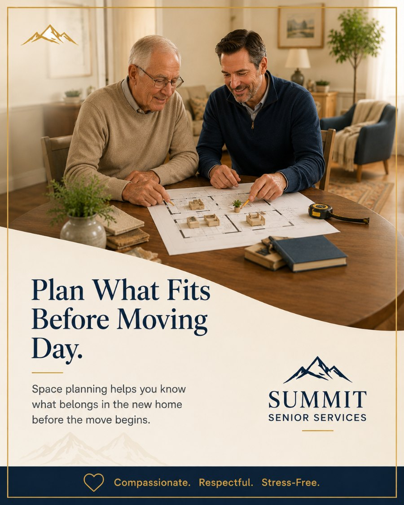

Let's make sure it all fits.
The free in-home consultation is the easiest way to start. No pressure, no obligation — just a conversation about what's needed and what's possible.
BrianFounder, Summit Senior Services
We get the new home's floor plan, measure every piece of must-keep furniture, and decide what fits before the truck is loaded — not after the sectional can't make the doorway and the day grinds to a halt.

A five-bedroom Cleveland colonial does not fit into a one-bedroom apartment, and the painful way to discover that is on move day — with a sofa wedged in a stairwell and a parent watching their favorite chair get carried back to the truck. It's stressful, it's expensive, and it's entirely avoidable.
We plan it on paper first. We obtain the new home's floor plan, measure every must-keep piece, and map exactly what goes where — testing each item against doorways, hallways, elevators, and the realities of the new layout before anything is loaded.
The payoff is a calm, decisive move. Families know in advance what's coming, what's being sold or donated, and precisely where each piece will land. No agonizing decisions in a driveway, no furniture making a round trip, no surprises when the elevator doors won't close on the dresser.
The quiet, up-front work that prevents the most stressful moments of any senior move.
We obtain or create the new home's floor plan with real dimensions, so every decision is based on the actual space, not a guess or a hope.
We build to-scale layouts placing each must-keep piece, so you can see what fits and how the rooms will feel before anything moves.
Every piece you want to keep is measured — width, depth, height — and checked against where it's meant to go in the new home.
We verify that large pieces clear doorways, stairwells, hallways, and elevators, catching the won't-fit problems while there's still time to plan.
For pieces that won't fit, we help decide early what to sell, donate, or pass to family, and route them to the right service before move day.
You get a clear placement map so the move team knows exactly where every item goes — no deliberating in the driveway.
A short, decisive process that takes the guesswork out of move day.
We obtain the new home's floor plan and confirm real dimensions for every room, doorway, hallway, and elevator.
We measure every piece of furniture the family wants to keep and note anything that will be tight to move or place.
We map each piece into the new layout, flag what won't fit, and decide together what's sold, donated, or kept.
You get a clear placement plan that guides the move team and makes move day fast, calm, and decision-free.
When square footage drops dramatically, planning is everything. We decide what fits the new life before a single box is packed.
Independent and assisted-living units are smaller, with specific elevator and doorway constraints. We plan around every one of them.
Hard furniture decisions get made calmly in advance, on paper, instead of under pressure with a moving crew waiting and the meter running.
Let's settle it on paper first. We'll measure, map, and decide what fits — so move day holds no surprises.
Most families use more than one of our services. Here are the ones that pair most naturally with floor plan & space planning.
Space planning is usually a focused, lower-cost service and is often bundled into a full move. We'll explain how it fits your situation during the free in-home consultation and put it in writing. No surprises, no hidden fees.
The free in-home consultation is the easiest way to start. No pressure, no obligation — just a conversation about what's needed and what's possible.